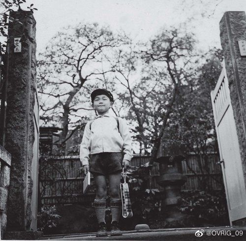
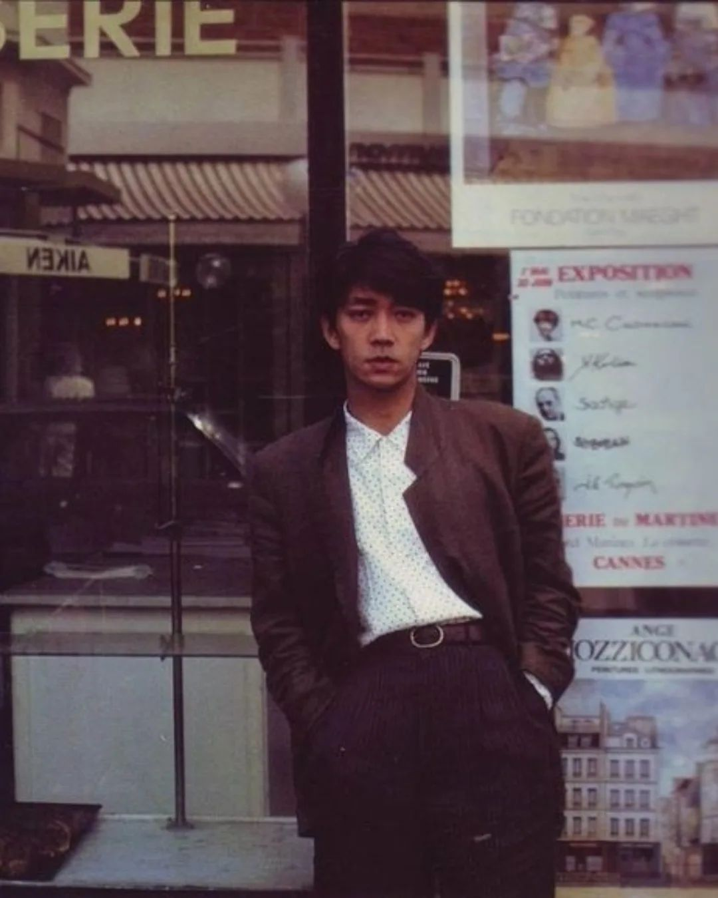
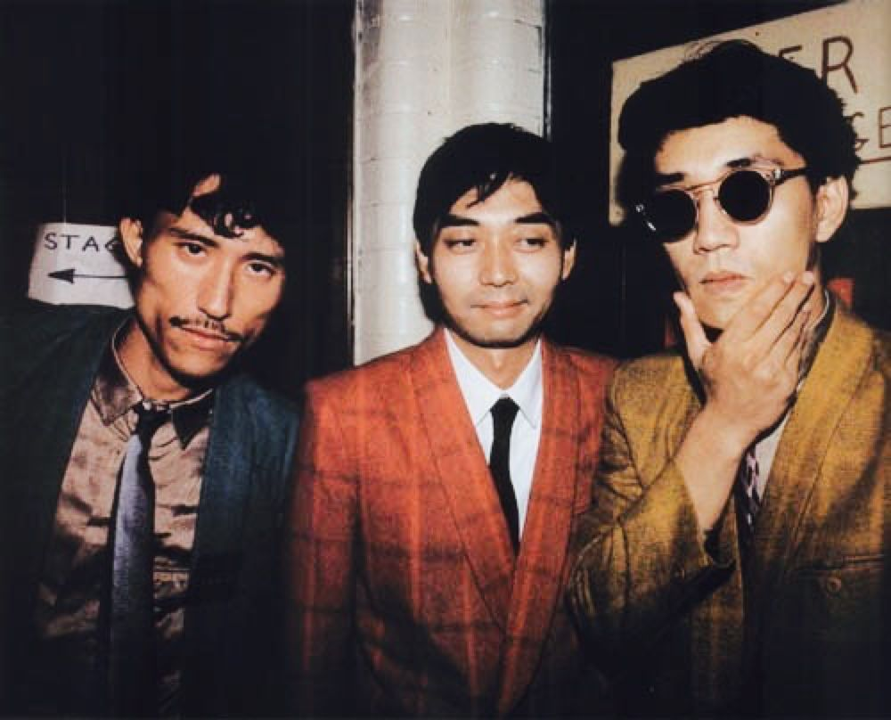
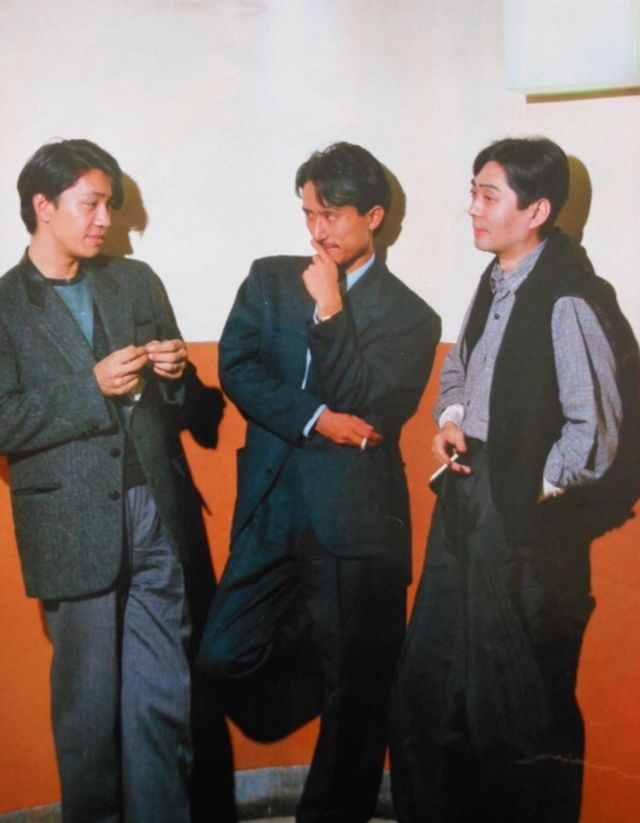

1952 — 1970
出生与启蒙
1952年1月17日生于东京中野区。父亲是河出书房的编辑，母亲是帽子设计师，家里常年流淌着古典音乐的唱片声。3岁学钢琴，10岁师从东京艺术大学松本民之助教授学作曲。初中迷恋披头士和德彪西，一度以为自己是德彪西转世，偷偷给自己取了"德彪西"的昵称。1970年背着父亲报考东京艺术大学作曲系并被录取，后深入研究民族音乐学——为他日后打通古典、电子、世界音乐埋下伏笔。


1978
YMO 结成 · "教授"诞生
10月发行个人首张专辑《Thousand Knives》出道。11月与细野晴臣、高桥幸宏组建 Yellow Magic Orchestra（YMO），把日本电子乐推向世界。第二张专辑《SOLID STATE SURVIVOR》爆红，其中《Behind the Mask》后来被 Michael Jackson 翻唱。坂本被高桥幸宏戏称为"教授"——因为他学识渊博，总爱讲一堆理论，这个昵称跟随了他一生。但YMO火遍全球后，他因厌恶被追捧，曾在家整整宅了10个月不出门。


1983
《战场上的快乐圣诞》
YMO 解散。大岛渚导演邀请他出演电影《战场上的快乐圣诞》——和大卫·鲍伊、北野武同台。接到电话时，他脱口而出的不是"好"，而是"配乐也请让我来做"。主题曲《Merry Christmas Mr. Lawrence》成了传世经典，获第37届英国电影学院奖最佳配乐奖——坂本龙一人生中第一个国际大奖。但有趣的是，他本人长期不喜欢这首"太高调"的曲子，每次被要求演奏时，都带着复杂的情绪坐到钢琴前。
Merry Christmas Mr. Lawrence · 1983
1987
《末代皇帝》· 奥斯卡之夜
贝托鲁奇导演的《末代皇帝》找到了他。两周内完成45首曲目，融合中国传统乐器与西方管弦乐。电影一举拿下奥斯卡最佳原创配乐奖、金球奖、格莱美奖，坂本龙一成为首位获得奥斯卡作曲奖的日本人。此后十年持续走向世界：1990年移居纽约；1992年为巴塞罗那奥运会开幕式谱曲；1999年《Energy Flow》成为日本公信榜第一首百万销量器乐单曲。
The Last Emperor Theme · 1987
2011
311地震 · "大自然的调音"
东日本大地震与福岛核事故撼动日本。坂本龙一深入宫城县避难所，在中学体育馆为灾民演奏钢琴——他反复说"不好意思，在这种时候还弹钢琴"。在陆前高田市废校，他发现一架被海啸浸泡、音律全失的钢琴，按下一个键，听到的是被海水重新"调"过的混沌共鸣——他称之为"大自然的调音"。此后发起为灾区学校捐赠乐器，2014年共创"东北青少年管弦乐团"亲任音乐指导。他厌恶"音乐有治愈力"的说法："音乐只是声音而已——但声音有时恰好在那样的时刻，会被需要它的人听见。"
2014 — 2017
与癌共生 · 《async》
2014年7月确诊三期口咽癌，首次公开暂停一切音乐活动。因放疗可能损伤声带，他选择不手术，唾液分泌降至正常人的七成。康复后重新审视"什么是音乐"——2017年发行晚期代表作《async》，彻底抛弃传统旋律与节拍，融入雨打水桶声、钢琴内部琴弦的微音、自然采样与合成器的交织。他质问："大自然从来不协调——风、雨、虫鸣，从来没有在同一个调上。"纪录片《终曲》片末，他在那架被海啸泡过的钢琴前坐下，弹下一个走音的键，笑了。
2020
为武汉祈福 · "中国武汉制造"
新冠疫情在武汉暴发，坂本龙一成为最早为中国观众公开送祝福的国际音乐家之一。2月发布钢琴演奏《aqua》视频，末尾用中文写下："不能出门玩耍很难过吧，但既然现在不用去学校了，就在家尽情做好玩的事吧。去读很多书，听很多音乐。"2月29日线上音乐会，他舞台上摆着一面写着"中国武汉制造"的吊钹——"武汉在制作吊钹方面非常有名，我经常用在音乐里。"演奏结束，他直视镜头用中文说出："大家，加油。"
2021 — 2022
《12》· 最后的日记
2020年6月确诊直肠癌——继口咽癌后的第二种癌症，相继转移至肝脏、淋巴和肺部。两年间经历6次手术，他坦言："如果什么都不做，只剩半年的生命。"但依然坚持创作——在纽约工作室录下零散灵感片段：合成器的回声、钢琴音阶的尝试、雨声的采样。2023年1月17日，71岁生日当天，这些片段被整理成专辑《12》发行，每首曲目用日期编号——一本用声音写成的疾病日记。2022年12月，他预先录制的钢琴独奏音乐会线上全球播放，演出跨越其一生曲目。约3个月后，2023年3月28日，他离开了人世。
2023.03.28
逝去
2023年3月28日，坂本龙一因直肠癌晚期在东京病逝，享年71岁。噩耗直到4月2日才由事务所公布——遵照他生前意愿，葬礼已私人举行。生命最后日子里，他仍为是枝裕和导演的电影《怪物》配乐——唯一一次在合同中写明"因健康原因，无法接受新委托"，只以现有素材完成最后交付。同年5月《怪物》戛纳首映，是枝裕和以片尾字幕致敬。坂本龙一一生留下80余张专辑、30余部电影配乐——他常引用一句箴言："Ars longa, vita brevis. 艺术长存，生命短暂。"
Monster OST · 怪物配乐 · 2023